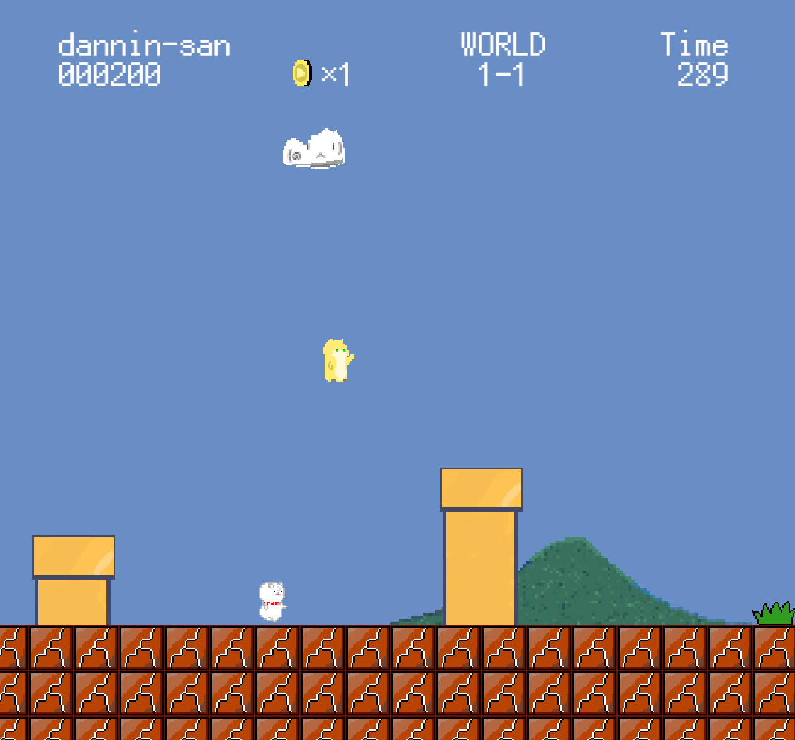

紹介動画
スクリーンショット
ダウンロード（←オススメ！
ゲームをダウンロード（ZIP）ブラウザでプレイ（←オススメじゃない！）
操作説明
- 左右下移動：キーボードの ← ↓ → または コントローラーの左スティック（左右下）
- ジャンプ：キーボード↑ スペースキー または コントローラーの A または B
- 特殊アクション / 決定：Zキー または コントローラーの A B（右にある4つのボタンの「右」か「下」）
- ダッシュ：Ctrlキー または コントローラーの Y（右にある4つのボタンの「左」）
- 一時停止：Escキー または コントローラーのマイナスボタン（−）
※ゲームパッド対応。キーボードでも快適に操作できます。
Relival（リリヴァル）復活
本作には「Relival（リリヴァル）」と呼ばれる特殊な復活システムがある！！
通常はゲームオーバーになるとワールドの最初からになるけど～？、Relivalを使用すると、ゲームオーバーになったステージから復活できる！！！！
Relivalを行うには、各ワールドの最後のステージに隠された専用アイテムを入手する必要があるよ。
ただ、Relivalのアイテムは最大2個までしかストックできない！！あとRelival入手は各ワールド一回までだから気を付けて。